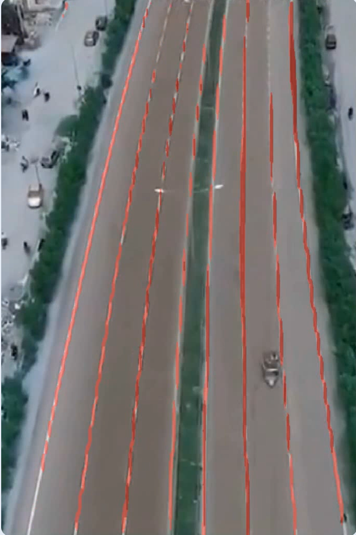
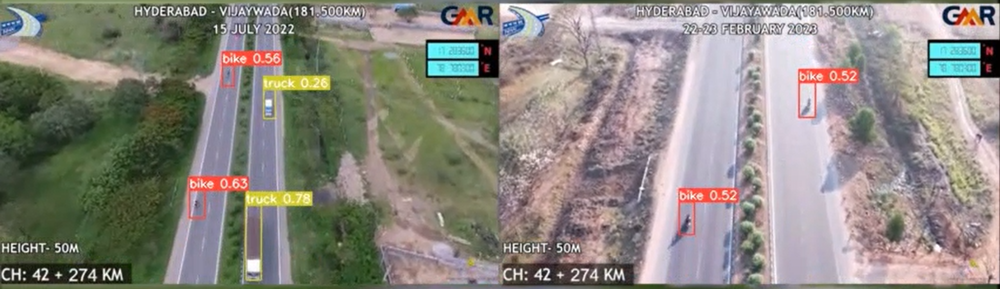
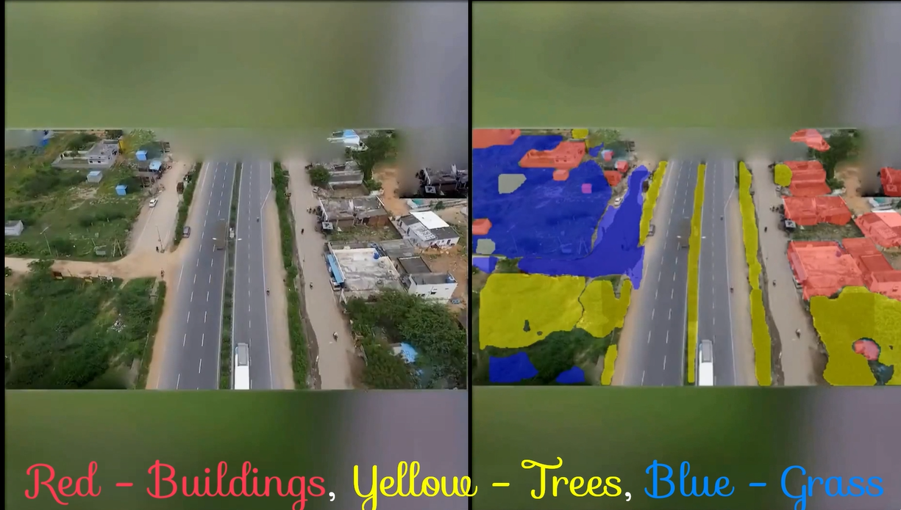
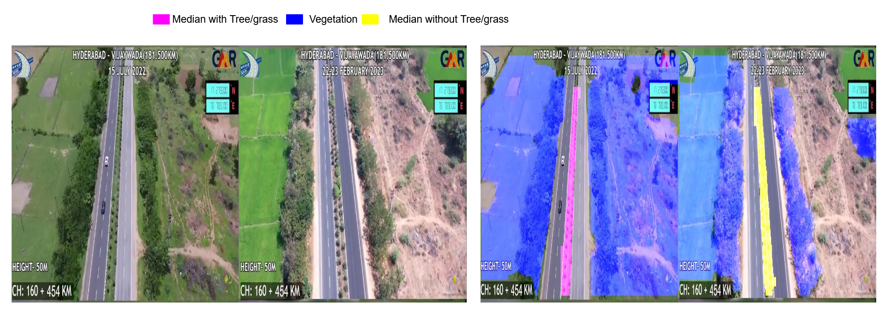
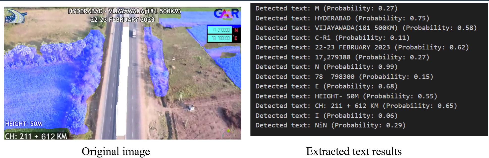

Internship Overview
Project Introduction
Lane Detection
Object Detection
Object Segmentation
Vegetation & Median Detection
Frame & Text Extraction
Conclusion
Internship Overview
Position: Research Intern
Company: IHub-data IIIT Hyderabad
Project: National Highways Authority of India (NHAI) Project
Duration: 6 Months
Project Introduction
Overview of the project’s goal to enhance road safety using ML models for lane detection, object detection, and image segmentation.
Lane Detection
Highlight the use of YOLOv8 for detecting road lanes from drone footage.
Object Detection within Road Boundaries
Showcase the model’s ability to detect vehicles like cars, trucks, and bikes.
Object Segmentation Outside Road Boundaries
Present the segmentation of objects like buildings and greenery outside road boundaries.
Vegetation & Median Detection
Detail the detection of trees, grass, and medians (with and without vegetation) using YOLOv8 and FCNN models.
Text Extraction
Include the process of extracting and compiling video frames.
Explain the OCR process for determining the lat/long coordinates from the extracted frames.
Conclusion
A reflective summary of the intern’s contributions to the project, emphasizing the application of computer vision techniques in real-world scenarios.